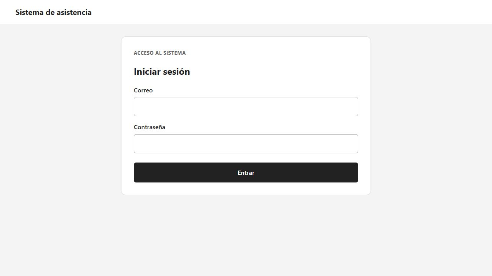
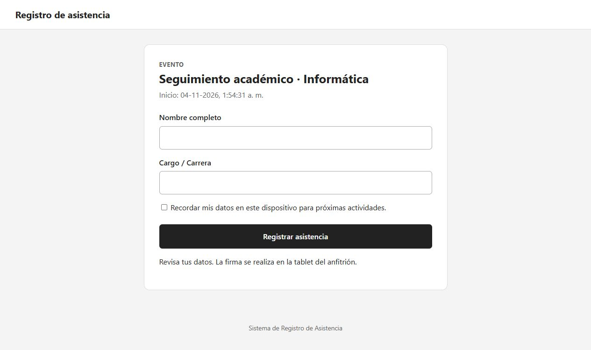
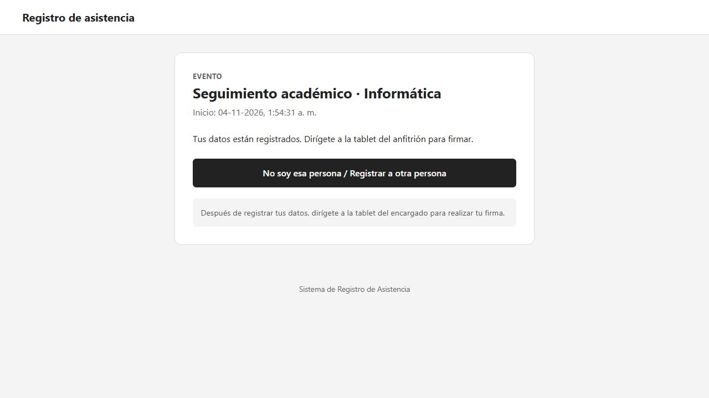
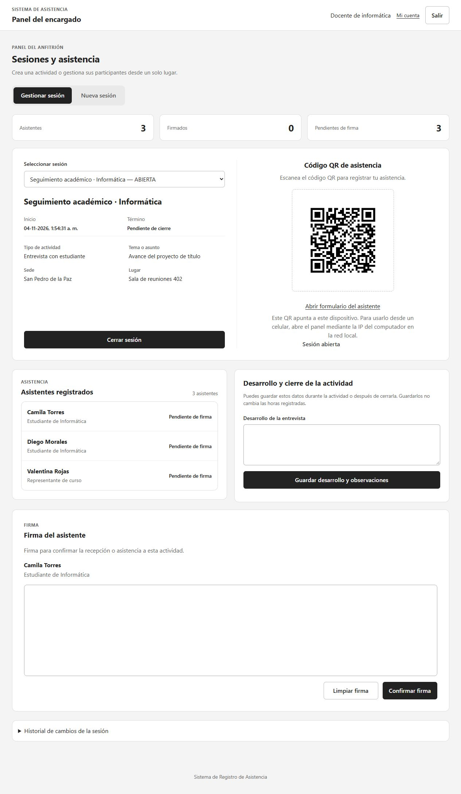
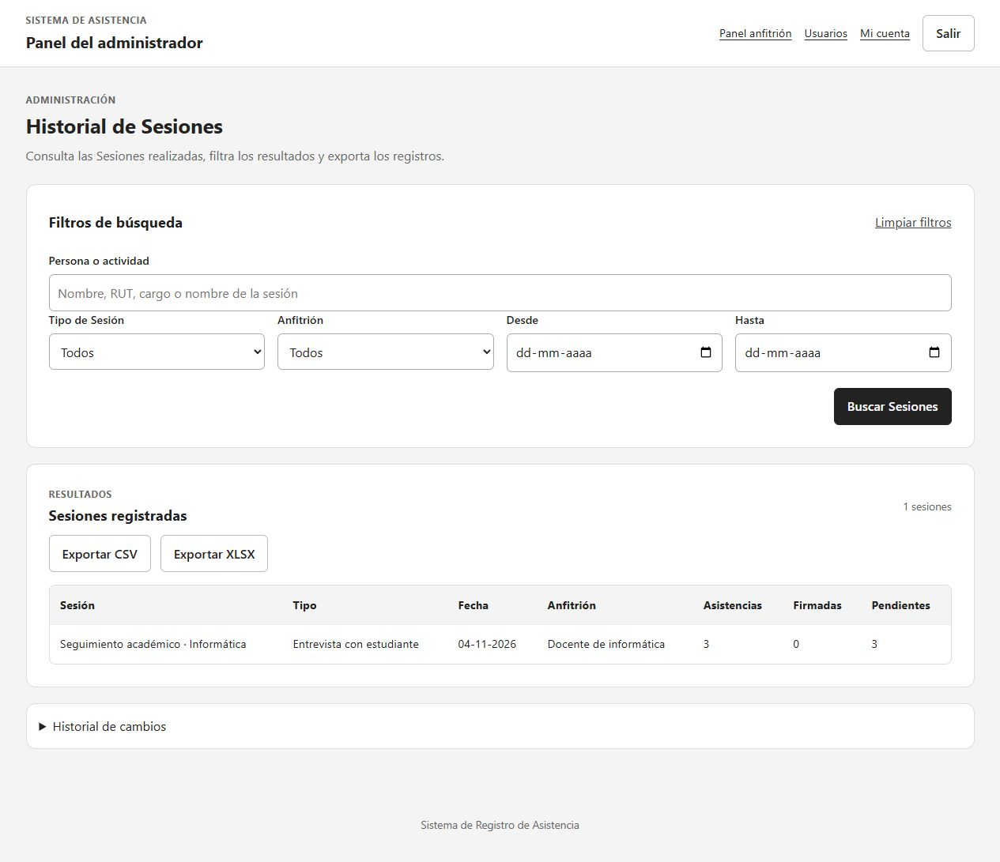
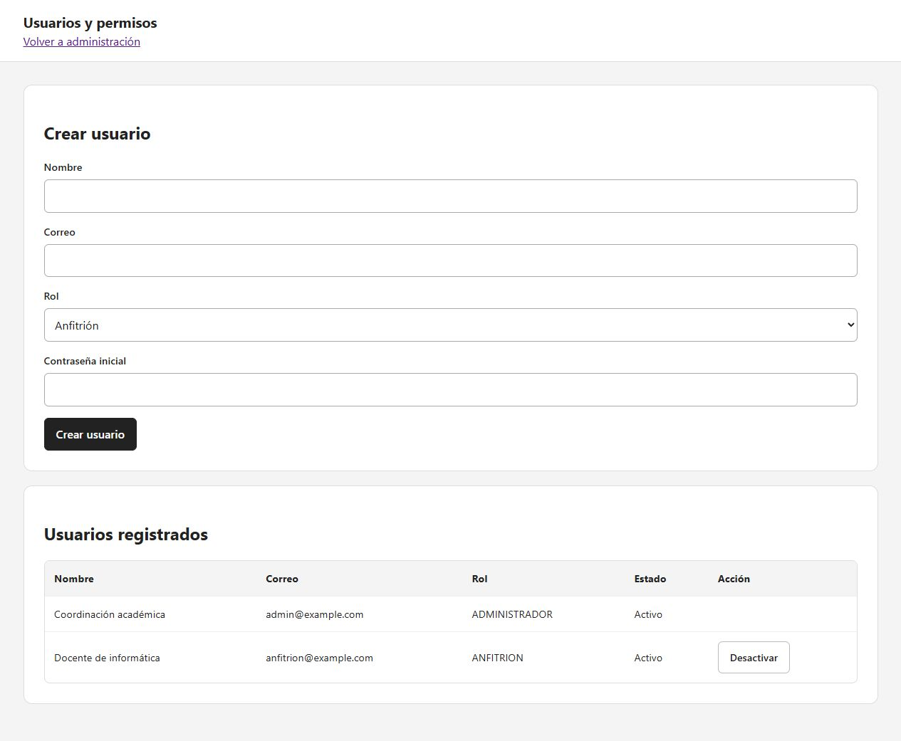

Sistema de registro de asistencia
Capturas reales de las pantallas actuales. Actores: asistente, anfitrión y administrador. Datos ficticios para demostración. La firma se recoge en el panel del anfitrión.
Acceso compartido
Iniciar sesión · Descargar imagen
Asistente
Formulario desde el QR · Descargar imagen
Registro confirmado: acudir a la tablet · Descargar imagen
Anfitrión
Crear sesión con plantilla · Descargar imagen Gestionar sesión y participantes · Descargar imagen
Gestionar sesión y participantes · Descargar imagen Firma presencial en la tablet · Descargar imagen
Firma presencial en la tablet · Descargar imagen
Administrador
Historial, filtros y exportación · Descargar imagen
Detalle y exportación de asistentes · Descargar imagen Usuarios y permisos · Descargar imagen
Usuarios y permisos · Descargar imagen